![]()
01:00
Staying Current with the Journals
Capture Current Literature of a Scientific domain with RSS
Wednesday, the 29th of January, 2025
Customized Agg. of Current Scientific Literature
What does a completed setup look like?
Overview
Background
Install and Set Up
Suggested Usage
Techniques for Success
Background
- The fundamentals of RSS
- What is RSS?
- Why use RSS?
- Which RSS to use?
RSS is a web-based aggregation tool
Background
What does RSS stand for?
- Conflicting accounts!
- Really Simple Syndication
- Rich Site Summary
- RDF Site Summary
- RSS \(\equiv\) a website feed aggregator
- Conflicting accounts!
What is RSS though?
- Set of technical standards
- A standard, computer-readable format
- Written in extensible mark-up language (XML)
- For storing and sending data through the internet
- Set of technical standards
A self-updating scientific journal website aggregation system
What is RSS good for?
Quick Write
In one or two sentences,
how can RSS be applied to your scientific or scholarly work?
Academia is impacted by politics
Background
An RSS aggregator will centralize all feeds across devices
Background
The day an important article is published you will be able to find it!
- Single concentrated reference point
- Track many different websites
- Regular updates (~1-6hrs)
- Convenient
- Desktop
- Mobile
- Browser
Too many software options!!!
Background
There are dozens of notable RSS readers.
Most have a pay-tiered system.
I suggest Inoreader… currently
- Most useful options at unpaid subscription level are:
- Compatible with IOS, Andriod, and the Web
- Organizing with folders and tags
- Highlighting keywords
- Ability to search
- Most useful options at unpaid subscription level are:
Install and Set Up
- Install Inoreader
- Find academic journal feeds
- Organize feeds
Create an account
Install and Set Up
- Go to Inoreader
{kind=link}
Create an account
Install and Set Up
- Go to Inoreader
- Select
Create account
{kind=link}
Create an account
Install and Set Up
- Go to Inoreader
- Select
Create account - Fill in email and password
- Select
Create account
{kind=link}
Optionally, download the mobile app
Install and Set Up
- Benefits
- Portability
- Interoperability
- Make doom scrolling productive
Click your system below:

Optionally, install a browser extension
Install and Set Up
05:00
- Benefits
- Portability
- Interoperability
- Make doom scrolling productive
Click your system below:
Quick guide to curate feeds in Inoreader
Install and Set Up
{kind=link}
Quick guide to curate feeds in Inoreader
Install and Set Up
{kind=link}
Quick guide to curate feeds in Inoreader
Install and Set Up
- Select
Add new - Search a topic, website, or journal
- Select
Followfrom the feed suggestions

Gather feeds to fit your research interests
Install and Set Up
document.getElementById("userInput").addEventListener("input", function() {
let userInput = this.value;
let words = userInput.split("-");
let output = "";
words.forEach(word => {
output += `<li>${word}</li>`;
});
document.getElementById("outputText").innerHTML = `<ul>${output}</ul>`;
});08:00
Journal options
- Wiki of Journals
- Scopus Journals
- The NIH Library of Journals
- ChatGPT: “what are the best journals for [bioinformatics] research?”
- Find RSS Links on a Website Supp.
Organize feeds by creating folders
Install and Set Up
Create new folder
{kind=link}
Organize feeds by creating folders
Install and Set Up
Create new folder
- Select üìÅ icon
- Write
Folder name
{kind=link}
Organize feeds by creating folders
Install and Set Up
Create new folder
{kind=link}
Organize feeds by creating folders
Install and Set Up
Create new folder
Organize feeds by adding to existing folders
Install and Set Up
Add to existing
Organize feeds by adding to existing folders
Install and Set Up
Add to existing
{kind=link}
Organize feeds by adding to existing folders
Install and Set Up
Add to existing
{kind=link}
Organize feeds by adding to existing folders
Install and Set Up
Add to existing
{kind=link}
Organize feeds by adding to existing folders
Install and Set Up
Add to existing
Make your folders for your feeds
Install and Set Up
05:00
Consider grouping journals categories:
- Broad
- interdisciplinary, high-impact factor
- Topics
- Molecular Biology, Genetics, Bioinformatics
- Time span they publish or you want to check
- Continuous, Weekly, Monthly, Quarterly, Annually
- “Nature is a weekly international journal”
- Access
- Open access, Publisher, Preprints
- Broad
Suggested Usage
- The functionality of Inoreader
- Highlighting keywords
- Tagging system
- Rapid navigation
- Search the feeds
Highlighting keywords for efficient literature discovery
Suggested Usage
05:00
Assign color to keywords
- Trouble? Try asking ChatGPT for a list:
- What are keywords for [microbial metagenomic metabolomic metabolite cancer] research?
- Please expand this list further. (Generic or with direction…)
Tags articles to organize and recall
Suggested Usage
Library
- Tag with keywords like:
- Topics: ProjectName, QE, Grant
- Content: Video, peer, opinion, review
- Resources: Github, scripts, references
- Priority: High, medium, low
Navigating literature blazingly fast with keybindings
Suggested Usage
h or ? for keybindings
Navigating literature blazingly fast with keybindings
Suggested Usage
05:00
Below are some suggestions to speed-up your usage:
n,por withshift: navigate the articles or side-barj,k: navigate the Article view orspace: to scroll through the abstractm,f: mark the articles as read or read later1,3: change views from list to cards- use
vto load a new tab orwto load the content
Search the feeds for rapid re/discovery
Suggested Usage
Located at:
- Upper right ü¢ñ üîç
- Left-hand ü¢ñ üîç
Add feedü¢ñMonitor feed
Straight-forward operation:
- Search articles in feeds, folder, or tags
- Use boolean operators
ANDORNOT""()
Techniques for Success
- Quickly sort articles from feeds
- Time management and blocking
The 80:20 method is ideal to filter papers
Techniques for Success
- 80:20?
- Remove 20% each step
- Remember IMRaD?
- RSS reader focus on Title and Abstract!
f - Import
finto reference manager - “I’D MembeR” better
- RSS reader focus on Title and Abstract!

Mindfully approach time management for best results!
Techniques for Success
{kind=link}
- Consider time blocking
- When do you work best?
- 3-2-1 method
Summary
You have learned:
- RSS and Readers
- The fundamentals of RSS
- The application to use
- Inoreader
- Install Inoreader
- Find academic journal feeds
- Organize feeds
- The functionality of Inoreader
- Skills to rapidly consume literature
- Quickly sort articles from feeds
- Time management and blocking
Acknowledgments
‚ÄúThe next best thing to being wise oneself is to live in a circle of those who are.‚Äù üë§ C.S. Lewis
- C. Titus Brown
- Pamela Reynolds
- Bryshal Moore
- Luiz Irber
- The DataLab
- Professors For The Future
- NSF GRFP
- IMSD


Supplementary
Finding the RSS link to a website
Click Here to Go Back to Gathering Feeds
- RSS Validator
- Navigate to the website:
- Right click page
- Select
Page Source - Press
ctrl+forcmd+f - Type
rss
- No RSS found?